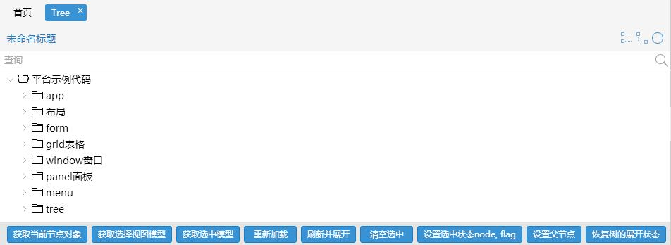

Tree
介绍
树

示例代码
Ext.define('App.demo.tree.Tree',{
init: function(){
var view = Ext.create('Ins.tree.Tree',{
url: CTX_PATH + '/demo/loadAll',
//数据字段，会默认添加"id", "pid", "text"三个字段，如果需要添加自定义的字段可在本初申明字段名称,取值方式record.data.字段名称；
fields : [],
//主键
pkField: 'id',
//左键双击事件
onDblClick : function(record, e){
console.log("tree：双击事件onDblClick");
//record : Ext.data.Model The record that belongs to the item
console.log(record);
//e : Ext.event.Event The raw event object
console.log(e);
},
//右键点击事件
onContextMenuClick : function(record){
console.log("tree：右键点击事件onContextMenuClick");
//record : Ext.data.Model The record that belongs to the item
console.log(record);
},
//左键单击事件
onClick : function(record){
console.log("tree：左键单击事件onClick");
//record : Ext.data.Model The record that belongs to the item
console.log(record);
},
//是否自动加载
loadOnShow : true,
//隐藏标题
hideTitle : false,
//是否可查询
searchFiled: true,
//查询框内的提示输入文本
searchFieldText: '查询',
buttons: [{
text: '获取当前节点对象',
handler: function() {
var currentNode = view.getCurrentNode();
console.log("获取当前节点对象");
console.log(currentNode);
}
},{
text: '获取选择视图模型',
handler: function() {
var selectView = view.getSelectedView();
// 返回值
// count : selection.length,
// idSer : ids,
// idArr : Ext.JSON.decode(ids),
// records : selection
console.log("获取选择视图模型");
console.log(selectView);
}
},{
text: '获取选中模型',
handler: function() {
var checkedView = view.getCheckedView();
// 返回值
// count : selection.length,
// idSer : ids,
// idArr : Ext.JSON.decode(ids),
// records : selection
console.log("获取选中模型");
console.log(checkedView);
}
},{
text: '重新加载',
handler: function() {
view.load({"params":"loadparams"});
}
},{
text: '刷新并展开',
handler: function() {
view.reloadExpand();
}
},{
text: '清空选中',
handler: function() {
view.clearChecked();
}
},{
text: '设置选中状态node, flag',
handler: function() {
view.setChecked(node, flag);
}
},{
text: '设置父节点',
handler: function() {
view.setParentNodeChecked(node);
}
},{
text: '恢复树的展开状态',
handler: function() {
view.recvExpand();
}
}]
});
return view;
}
});
类名
Ins.tree.Tree
别名
ins_tree
继承自
Ext.tree.Panel
构造对象
var view = Ext.create('Ins.tree.Tree',{
url: CTX_PATH + '/demo/loadAll',
//数据字段，会默认添加"id", "pid", "text"三个字段，如果需要添加自定义的字段可在本初申明字段名称,取值方式record.data.字段名称；
fields : [],
//主键
pkField: 'id',
//左键双击事件
onDblClick : function(record, e){
console.log("tree：双击事件onDblClick");
//record : Ext.data.Model The record that belongs to the item
console.log(record);
//e : Ext.event.Event The raw event object
console.log(e);
},
//右键点击事件
onContextMenuClick : function(record){
console.log("tree：右键点击事件onContextMenuClick");
//record : Ext.data.Model The record that belongs to the item
console.log(record);
},
//左键单击事件
onClick : function(record){
console.log("tree：左键单击事件onClick");
//record : Ext.data.Model The record that belongs to the item
console.log(record);
},
//是否自动加载
loadOnShow : true,
//隐藏标题
hideTitle : false,
//是否可查询
searchFiled: true,
//查询框内的提示输入文本
searchFieldText: '查询'
});
属性
| 属性名 | 属性值类型 | 描述 | 默认值 |
|---|
| checkedAsParent |
Boolean |
复选框级联父节点 |
true |
| url |
String |
数据请求地址 |
null |
| fields |
String[] |
自定义树节点属性系统自带属性"id", "pid", "text |
[] |
| pkField |
String |
主键 |
'id' |
| loadOnShow |
boolean |
是否自动加载 |
true |
| hideTitle |
boolean |
是否隐藏标题 |
false |
| searchFiled |
boolean |
是否可查询 |
false |
| searchFieldText |
String |
查询框内的提示输入文本 |
'查询' |
方法
| 返回值 | 方法名称 | 描述 |
|---|
| currNode |
getCurrentNode() |
获取当前节点对象 |
{
count : selection.length,
idSer : ids,
idArr : Ext.JSON.decode(ids),
records : selection
}
|
getSelectedView() |
获取选择视图模型 |
{
count : selection.length,
idSer : ids,
idArr : Ext.JSON.decode(ids),
records : selection
}
|
getCheckedView() |
获取选中模型 |
| void |
view.load({"params":"loadparams"}); |
重新加载 |
| void |
reloadExpand() |
刷新并展开 |
| void |
clearChecked() |
清空选中 |
| void |
setChecked(node, flag) |
设置选中状态node, flag |
| void |
setParentNodeChecked(node) |
设置父节点 |
| void |
recvExpand() |
恢复树的展开状态 |
事件
| 返回值 | 事件名称 | 绑定方法 | 描述 |
|---|
| void |
onClick |
function(record){ } |
左键单击事件 |
| void |
onDblClick |
function(record, e){ } |
左键双击事件 record : Ext.data.Model The record that belongs to the item |
| void |
onContextMenuClick |
function(record){ } |
右键点击事件 record : Ext.data.Model The record that belongs to the item |